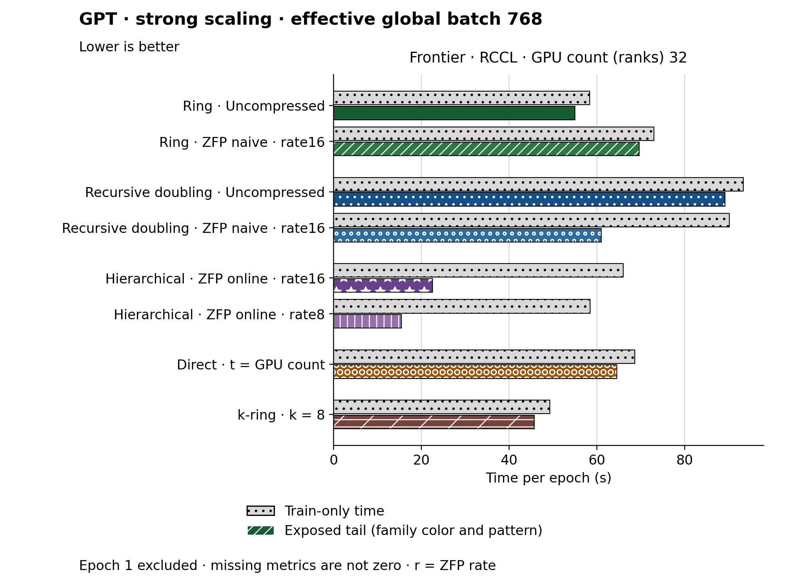

The figure uses hbar. Families and methods are identified by text and patterns in addition to color. The metric is Time per epoch (s). Frontier · RCCL, GPU count (ranks) 32: Hierarchical · ZFP online · rate8 has the lowest plotted value, 15.413. Epoch 1 is excluded. Values are medians; when repeated runs are available the selected repeat policy is median. These are not confidence intervals across repeated jobs. Missing or unrecorded metrics are omitted, not set to zero. Exposed tail is the instrumented tail, not total communication time. Each method has two separate horizontal bars starting at zero: a light gray dotted bar for train-only time and a family-colored patterned bar for exposed tail. They are not stacked. Both bars use the same post-warmup epochs and repeat selection. In iteration units, both are means per measured optimizer step, not median iteration latency. Shared horizontal limits support comparison across panels. The baseline is omitted when tail instrumentation is unavailable.
| Panel | GPU count (ranks) | Method | Value | Runs | Train-only time |
|---|---|---|---|---|---|
| Frontier · RCCL | 32 | ring | 55.0237745 | 1 | 58.4 |
| Frontier · RCCL | 32 | ring_zfp_naive:16 | 69.6208785 | 1 | 73.05000000000001 |
| Frontier · RCCL | 32 | recursive_doubling | 89.15509200000001 | 1 | 93.35 |
| Frontier · RCCL | 32 | recursive_doubling_zfp_naive:16 | 61.04652 | 1 | 90.2 |
| Frontier · RCCL | 32 | hierarchical_zfp_online_coll:8 | 15.412766 | 1 | 58.5 |
| Frontier · RCCL | 32 | hierarchical_zfp_online_coll:16 | 22.510723 | 1 | 66.0 |
| Frontier · RCCL | 32 | direct_p | 64.566231 | 1 | 68.65 |
| Frontier · RCCL | 32 | kring_k8 | 45.7750245 | 1 | 49.25 |